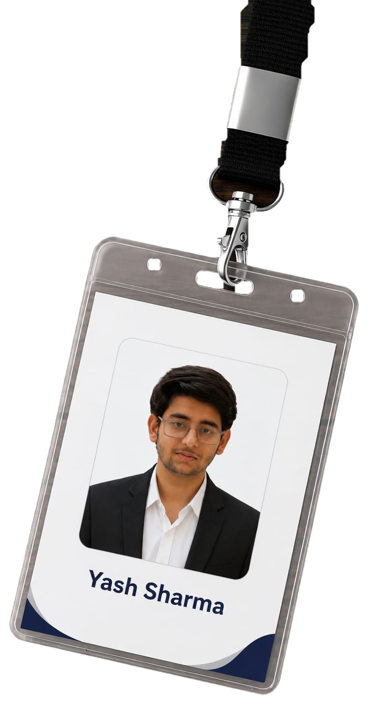

Coordinator
Coordinated a national-level hackathon and helped manage event operations, participant flow, and on-ground coordination.
Leadership
Events
Hackathon
PORTFOLIO
I build interfaces that feel obvious and systems that hold up when someone checks the replay.
01 / THE PROBLEM
Until the one case nobody tested for shows up in production.
02 / THE STANDARD
Every project I ship gets treated like it will be checked, twice.
03 / THE METHOD
Clear states, clean components, and logic that reads the same way twice.
I'm an engineer who works across the frontend and Python, currently pushing further into AI and picking up data science along the way. I like the parts of a project where something ambiguous becomes a clear, testable rule.
That's the thread through most of what I build — whether it's a UI that needs to feel obvious on the first try, or a system that has to make the same correct call every single time, no exceptions.
Off the back of that, I spend a fair bit of time on personal builds that push me into territory I haven't fully mapped yet — game logic, simulation, and anything that forces me to think in states and edge cases.

A desktop app that recreates cricket's Decision Review System runout check — a Python and Tkinter tool for stepping through a run-out and reaching a clear, defensible call.
A ground-up redesign concept for the ISRO public website — cleaner information hierarchy, faster navigation, and layouts that hold up from a launch console to a phone screen.
A feature-rich take on Pong in Python — object-oriented structure, adjustable AI difficulty, particle effects, and a proper finite state machine driving game flow.
New builds get added here as they clear review. Check the full archive for everything that didn't make the front page.
View more projectsLEADERSHIP & COMMUNITY
A glimpse into the roles I’ve taken beyond academics, with a focus on coordination, teamwork, and technical community work.
Coordinated a national-level hackathon and helped manage event operations, participant flow, and on-ground coordination.
Contributed to chapter activities and coordinated RACCAI, an international conference on recent advancements in communication, computing, and artificial intelligence.
NOT OUT · STILL BUILDING
I'll get back to you — usually within a day or two.
Send a message